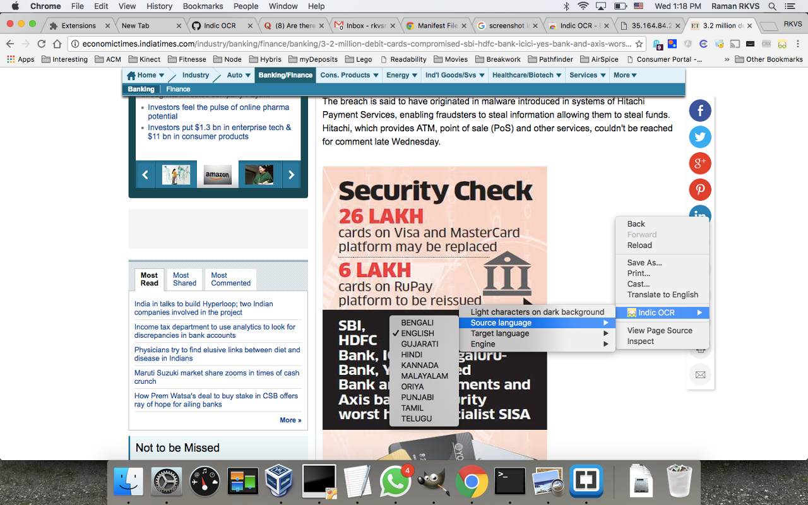

Chrome Indic
A small chrome extension inspired by Project Naptha and Copyfish
Chrome Indic uses OCR Service for OCR and transliteration service
Chrome Indic lets you select a rectangle of text in image and converts it to text.
Download extension from here


Authors and Contributors
Help
We would like to convert the extension to have all the features of Project Naptha. All help welcome.